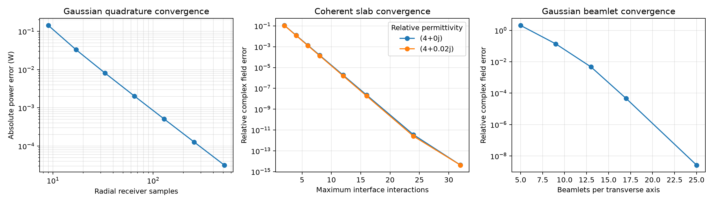

2026-10-16 · HEAD 4cbba43 plus validation repair · pre-cleanup reference f6f69fb
This is the historical cleanup audit. Full-suite counts and comparison logs refer to that run. The beam table below uses the currently saved beam results, generated 2026-11-14T08:18:39.752077+00:00. See the benchmark guide for current reproduction instructions.
All checked numerical results pass after repairing public option validation.
Both point-ray multipath and Gaussian-beam transport were tested. Current C++ and Python extension code was rebuilt with MSVC in Release mode. The validated repaired wheel was installed into the repository's existing .venv and tested there. The numerical run used no CUDA. Two viewer-only tests were excluded.
The cleanup moved validation out of low-level kernels, but failed to transfer every guard to the public solver boundary. Valid physical inputs still reproduced the analytical references. Invalid controls could silently discard paths or accept approximation settings outside the supported numerical model.
src/solver.cpp: restored finite delay-grouping tolerance, nonnegative refinement/backtracking/halving budgets, finite positive refinement steps and spreading tolerances, valid singular-value cutoffs and ratio, finite nonnegative ray-start distance, and deduplication angular bounds.src/beam.cpp: restored the pre-cleanup bound 0 ≤ max_loss_ratio ≤ 0.01.The cleanup deleted the analytical spreading and beam transport benchmarks. They are restored with current names and enums while retaining their independent reference formulas and tolerances. Spreading now runs as a CTest target, and the beam suite is exercised by pytest. Plotting is optional; all beam analytical checks also pass with Matplotlib and PyVista imports blocked.
The pre-cleanup CPU C++ implementation was independently built and its original benchmark executed. All 1,340 recorded rows match current results exactly at the numeric values written to CSV, including caustic counts and complex-field errors. This comparison concerns these benchmark cases, not every possible scene.
| Dataset | Rows | Maximum scaled old/new difference |
|---|---|---|
| spreading.csv | 610 | 0.0 |
| caustics.csv | 720 | 0.0 |
| convergence.csv | 10 | 0.0 |
Complex Gaussian field errors are about 6×10⁻¹⁴; slab sums about 4×10⁻¹⁵; Snell/Fresnel errors at roundoff. Beamlet field error converges to 2.63×10⁻⁹. The nonzero 3.18×10⁻⁵ W receiver-power error is the finite quadrature error, with its convergence explicitly checked.

| Analytical check | Maximum error | Limit | Result |
|---|---|---|---|
| Gaussian complex field across waist | 5.865e-14 | 2e-11 | Pass |
| Gaussian receiver quadrature | 3.179e-05 | 4e-05 | Pass |
| Gaussian quadrature error reduction | 0.000222 | 0.001 | Pass |
| Slab coherent amplitude eps=(4+0j) | 4.344e-15 | 2e-11 | Pass |
| Slab convergence eps=(4+0j) | 3.91e-14 | 1e-08 | Pass |
| Slab coherent amplitude eps=(4+0.02j) | 4.314e-15 | 2e-11 | Pass |
| Slab convergence eps=(4+0.02j) | 3.99e-14 | 1e-08 | Pass |
| Slab branch energy accounting | 3.268e-16 | 2e-12 | Pass |
| Finite Gaussian slab coherent transmission | 4.176e-15 | 2e-11 | Pass |
| Pruning convergence | 4.344e-15 | 2e-11 | Pass |
| Fresnel angle sweep | 3.886e-16 | 2e-12 | Pass |
| Snell refraction | 5.551e-17 | 2e-12 | Pass |
| Lossless R+T | 6.661e-16 | 2e-12 | Pass |
| Concave mirror complex field and Gouy phase | 1.143e-13 | 2e-11 | Pass |
| Concave mirror beam width | 5.551e-17 | 2e-12 | Pass |
| Oblique spherical mirror astigmatism | 4.441e-16 | 2e-11 | Pass |
| Repeated spherical/cylindrical Gaussian focus complex field | 1.041e-15 | 2e-10 | Pass |
| Repeated spherical/cylindrical Gaussian focus widths | 3.997e-15 | 2e-11 | Pass |
| Gaussian curved refraction complex field | 8.509e-14 | 2e-11 | Pass |
| Gaussian curved refraction width | 4.163e-17 | 2e-12 | Pass |
| Homogeneous absorption and phase | 1.57e-16 | 2e-12 | Pass |
| Gaussian beamlet spatial convergence | 2.629e-09 | 2e-06 | Pass |
| Gaussian beamlet error reduction | 1.273e-09 | 0.0001 | Pass |
This project uses exp(−iωt), unlike FEM/FDFD's positive-time convention. Passive ε and n therefore have positive imaginary parts; exp(+iknr) decays. Point rays require a lossless homogeneous background and use reflecting half-space surfaces. Beams use paraxial, weak-loss, whole-beam interactions. Edge diffraction and aperture clipping are not modeled; geometric-optics amplitudes at point receiver caustics remain intentionally unavailable. The tests respect these model assumptions.
Configure a Release C++ build with Eigen3, run cmake --build ... and ctest --test-dir ... --output-on-failure. Build/install the current wheel before Python tests. Run pytest tests/python -k 'not views_render' and python benchmarks/beam_transport.py. The original build/test logs and pre-cleanup CSV results are retained beside this report.
Native test log · Installed-wheel Python tests · Pre-fix failing regressions · Old/new comparison · Point reference summary · Beam reference data · Audit summary